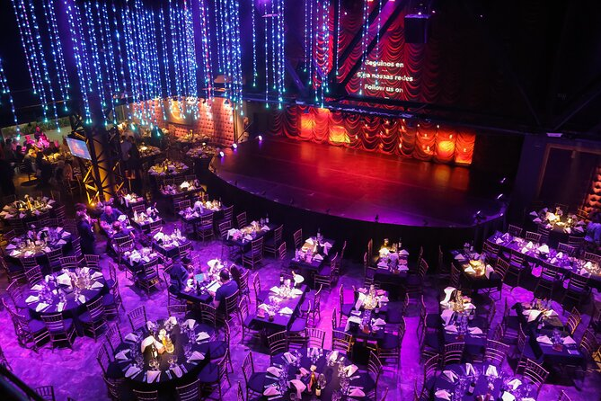
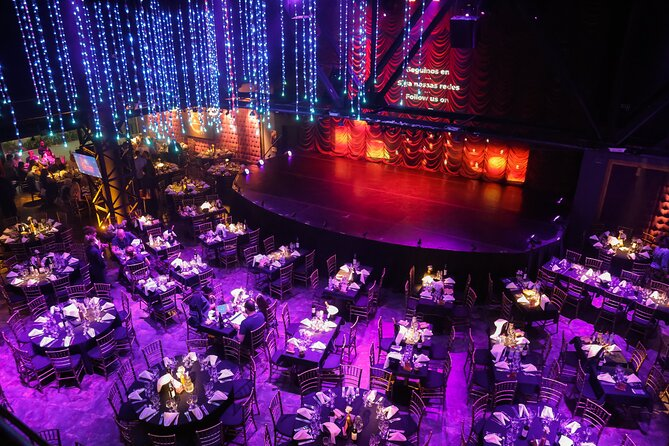
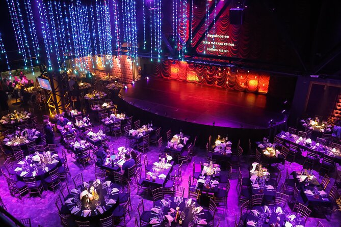
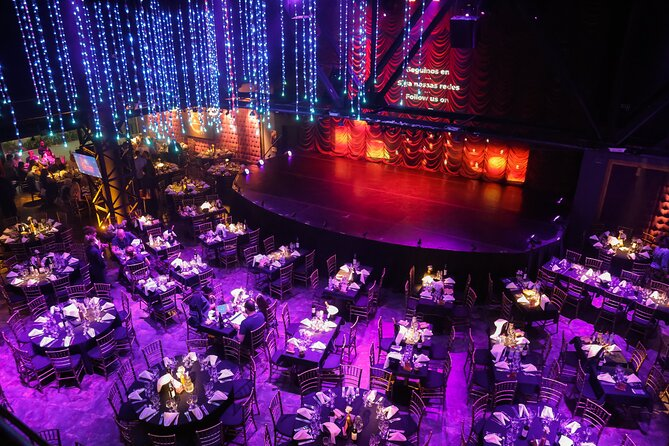

Madero Tango ofrece una experiencia única que combina gastronomía, música y danza en el corazón de Puerto Madero, uno de los barrios más elegantes de Buenos Aires. Durante el espectáculo,
los visitantes disfrutan de una cena completa con platos típicos argentinos, mientras artistas profesionales presentan un show de tango y folklore que incluye bailes, música en vivo
y vestuarios espectaculares.
El servicio está pensado tanto para turistas como locales, y brinda un ambiente elegante y acogedor, ideal para disfrutar de una noche memorable en pareja, con amigos o en familia. Además,
el teatro cuenta con asientos cómodos y buena visibilidad desde cualquier ubicación, y ofrece paquetes que incluyen bebidas, menú gourmet y la posibilidad de reservar mesas VIP.
Madero Tango no solo es un show, sino una verdadera experiencia cultural que permite sumergirse en la pasión del tango argentino mientras se disfruta de la mejor gastronomía local
y un ambiente único frente al río.